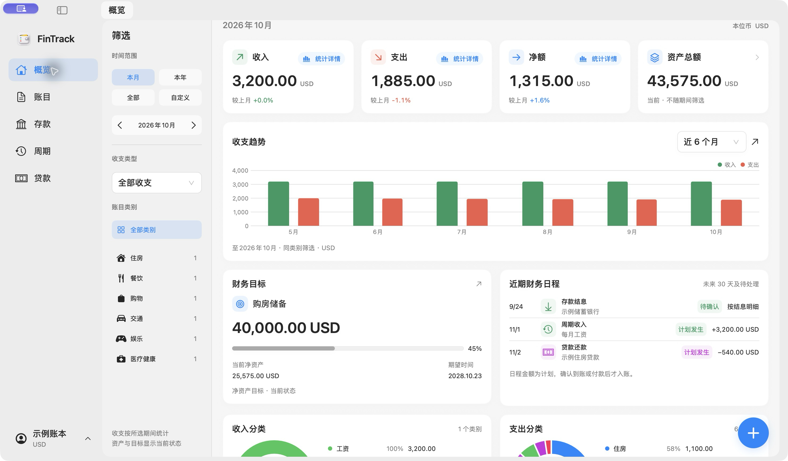
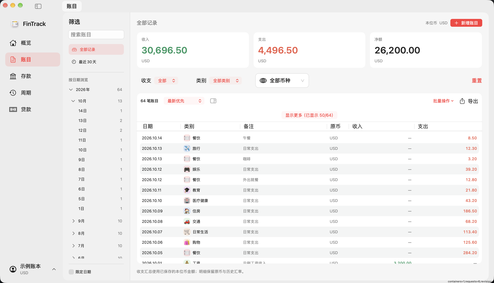

每一笔，都有来处。
记录收入与支出，按日期、类别和币种查找。用概览与财务统计，回看钱流向了哪里。

真实应用界面，使用隔离的示例数据
一间完整的财务工作台
让分散的账目、币种和计划，回到清晰的脉络。
记录收入与支出，按日期、类别和币种查找。用概览与财务统计，回看钱流向了哪里。
整理账户与资产，管理存款、贷款和周期记账，让预算与财务目标成为可以持续回看的计划。银行图片可自定义上传，按银行名称记住并自动匹配，无需重复添加。
查询和换算汇率，分别选择记账与菜单栏的数据来源。账目保留原币与历史汇率快照。
实际看一看
宽敞的工作区、明确的导航。
在记录、计划和回看之间自然切换。

按日期、类别与币种整理账目，原币和本位币金额都有迹可循。
FinTrack v1.0 · 示例账本账本与应用文件分开保存。应用代码的更新，不等于重新开始记账。
保存原生备份，恢复前先保留安全副本。CSV 适合交换数据，完整备份用于保存账本。
自定义汇率来源的 API 密钥不随账本备份迁移。汇率查询会连接所选的外部来源。
FinTrack for Mac
先录入少量数据，确认保存、重开与备份都符合你的需要，
再让 FinTrack 慢慢成为日常的一部分。
当前安装包使用 Ad-hoc 签名，尚未进行 Apple 公证。下载后可能需要在系统“隐私与安全性”中允许打开。查看安装说明 ↗
b904e3ad10bb5e23048f1292dac4db6e440457621620268ce1c620a5871b56c8下载校验文件 ↗版本与更新